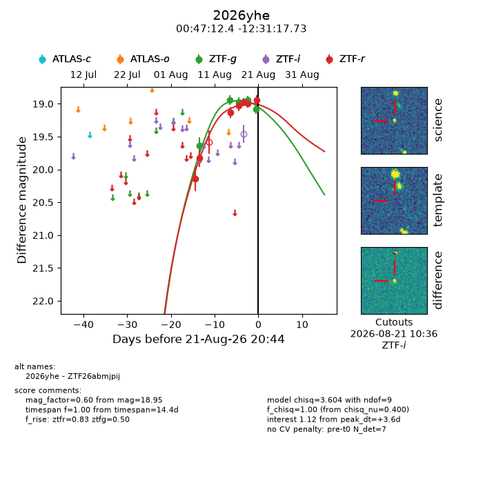
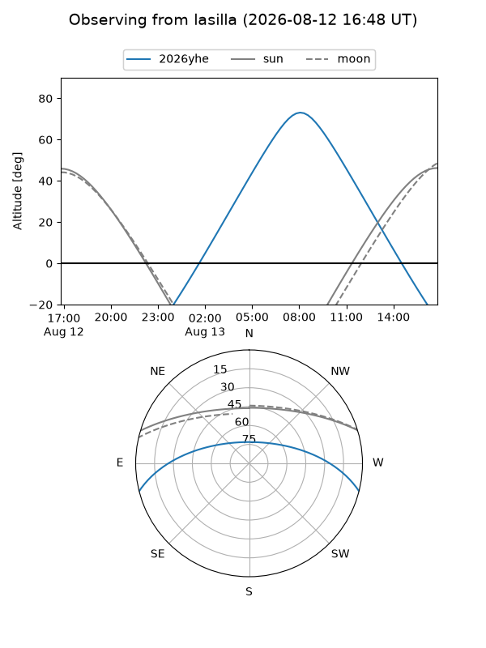
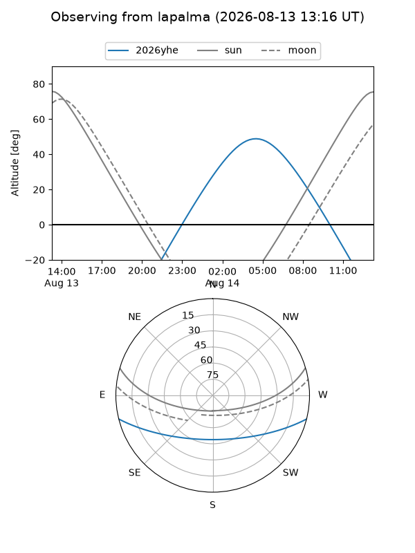
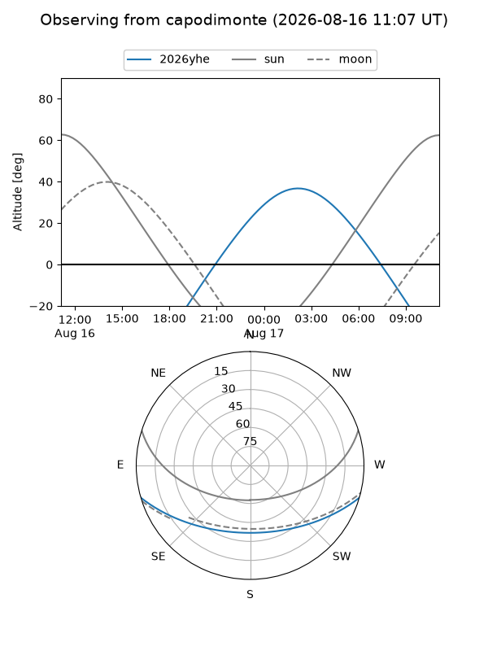
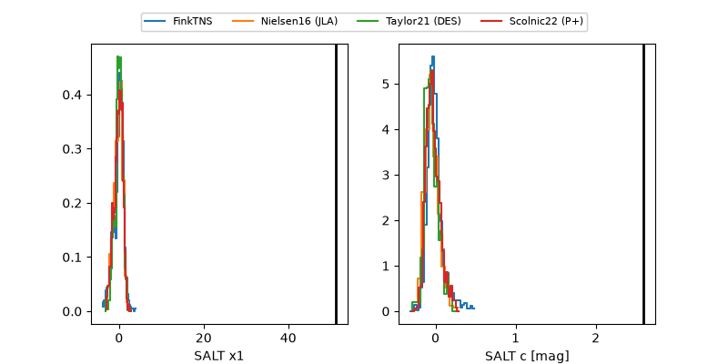

2026yhe
Target 2026yhe at 2026-08-21 20:47
Aliases and brokers:
FINK-ZTF: ztf.fink-portal.org/ZTF26abmjpij
Lasair-ZTF: lasair-ztf.lsst.ac.uk/objects/ZTF26abmjpij
ALeRCE-ZTF: alerce.online/object/ZTF26abmjpij
YSE-PZ: ziggy.ucolick.org/yse/transient_detail/2026yhe
TNS name: wis-tns.org/object/2026yhe
Direct TNS query: direct search
alt names
ZTF26abmjpij (ztf,fink_ztf)
2026yhe (tns,yse)
Coordinates:
equatorial (ra, dec) = 11.8018,-12.52159
equatorial (HMS+DMS) = 00:47:12.44,-12:31:17.73
galactic (l, b) = (118.8437,-75.35975)
Flags:
TNS type: nan
peak dt: +3.6
Photometry:
last ztfg=19.07, ztfr=18.95
5 ztfg, 7 ztfr detections
Lightcurve

Visibility



Additional plots
